전자계산기기사 (2009-05-10 기출문제)
1과목: 시스템 프로그래밍
1. 페이지 교체 알고리즘 중 한 프로세스에서 사용되는 각 페이지마다 카운터를 두어 현시점에서 가장 오랫동안 사용되지 않은 페이지를 제거하는 것은?
- LFU
- LRU
- OPT
- FIFO
(정답률: 93%)

2. 다음 중 시스템 프로그래밍 언어로 가장 적합한 것은?
- PASCAL
- COBOL
- C
- FORTRAN
(정답률: 100%)
3. 어셈블리어에서 라이브러리에 기억된 내용을 프로시저로 정의하여 서브루틴으로 사용하는 것과 같이 사용할 수 있도록 그 내용을 현재의 프로그램 내에 포함시켜 주는 명령은?
- EVEN
- ORG
- EJECT
- INCLUDE
(정답률: 91%)
4. 절대 로더(Absolute Loader)에서 어셈블러의 기능은?
- 기억장소 할당(Allocation)
- 연계(Linking)
- 재배치(Relocation)
- 적재(Loading)
(정답률: 66%)
5. Global Reference를 절대번지로 바꾸거나 Linking과 상대번지를 바꾸는 과정 등과 같이 변하기 쉬운 것을 확고하게 결정짓는 것을 무엇이라고 하는가?
- Binding
- Thrashing
- Paging
- Parsing
(정답률: 73%)
6. 둘 이상의 프로세스가 서로 다른 프로세스가 요구하는 자원을 가지고 있으면서 상대방 자원을 요구하며 무한정 기다리고 있는 상태를 무엇이라고 하는가?
- Swapping
- Overlay
- Deadlock
- Scheduling
(정답률: 92%)
7. 실행 중인 프로세스가 일정 시간 동안에 참조하는 페이지의 집합을 무엇이라고 하는가?
- Locality
- Thrashing
- Working Set
- Process
(정답률: 84%)
8. 작성된 표현식이 BNF의 정의에 의해 바르게 작성되었는지를 확인하기 위해 만들어진 Tree의 명칭은?
- Parse Tree
- Binary Search Tree
- Binary Tree
- Skewed Tree
(정답률: 88%)
9. 어셈블러를 이중 패스(Two pass)로 구성하는 주된 이유는?
- 어셈블러의 크기
- 오류 처리
- 전향 참조(Forward Reference)
- 다양한 출력 정보
(정답률: 100%)
10. 어셈블리어에 대한 설명으로 옳지 않은 것은?
- 연상 기계어라고도 한다.
- 프로그램은 0과 1로만 작성된다.
- 어셀블러에 의해 기계어로 변환된다.
- 어셈블러에 의해 번역된 형태를 목적 프로그램이라고 한다.
(정답률: 62%)
11. 운영체제를 수행 기능에 따라 제어 프로그램과 처리 프로그램으로 구분할 경우 제어 프로그램에 해당하는 것은?
- 언어 번역 프로그램
- 자료 관리 프로그램
- 서비스 프로그램
- 문제 프로그램
(정답률: 75%)
12. 어셈블리어에서 프로그램 작성시 한 프로그램 내에서 동일할 코드가 반복될 경우 반복되는 코드를 한번만 작성하여 특정 이름으로 정의한 후 그 코드가 필요할 때마다 정의된 이름을 호출하여 사용하는 것을 무엇이라고 하는가?
- Emulator
- Macro
- Preprocessor
- Spooling
(정답률: 92%)
13. 어셈블리어로 작성된 원시 프로그램이 실행되기까지의 과정으로 옳은 것은?
- 원시프로그램 → 어셈블링 → 목적프로그램 → 링크 → 로딩 → 실행
- 원시프로그램 → 어셈블링 → 목적프로그램 → 로딩 → 링크 → 실행
- 원시프로그램 → 링크 → 어셈블링 → 목적프로그램 → 로딩 → 실행
- 원시프로그램 → 어셈블링 → 링크 → 목적프로그램 → 로딩 → 실행
(정답률: 96%)
14. 운영체제(Operating System)에 대한 설명으로 옳지 않은 것은?
- 대표적인 운영체제로는 MS-DOS, MS Windows, Linux, Unix 등이 있다.
- 운영체제는 사용자와 컴퓨터 하드웨어 사이에 매개체 역할을 하는 시스템 소프트웨어이다.
- 운영체제의 주목적은 여러 컴퓨터 사용자가 서로 방해 받지 않고 효율적으로 컴퓨터를 이용하도록 하는데 있다.
- 운영체제는 컴퓨터 시스템에 항상 존재해야 하며 컴파일러, 문서편집기, 데이터베이스관리시스템 등의 프로그램을 내장하고 있다.
(정답률: 79%)
15. 의사 코드 명령(Pseudo Instruction)에 대한 설명으로 옳지 않은 것은?
- 어셈블러가 원시 프로그램을 번역할 때 어셈블러에게 필요한 작업을 지시하는 명령이다.
- 어셈블러 명령(Assembler Instruction)이라고도 한다.
- 데이터 정의, 세그먼트와 프로시저 정의, 매크로 정의, 세그먼트 레지스터 할당, 리스트 파일의 지정 등을 지시할 수 있다.
- 어셈블리 명령과 같이 기계어로 번역된다.
(정답률: 81%)
16. 하나의 시스템에 독립된 여러 개의 프로그램을 기억시켜 이들을 동시에 처리함으로써 프로그램의 처리량을 극대화하는 시스템을 무엇이라고 하는가?
- 다중 프로그래밍 시스템
- 다중 처리 시스템
- 분산 처리 시스템
- 시분할 시스템
(정답률: 69%)
17. 로더의 기능에 해당하지 않는 것은?
- Allocation
- Linking
- Relocation
- Compiling
(정답률: 92%)
18. 매크로 프로세서가 수행하는 기본 기능에 해당하지 않는 것은?
- 매크로 정의 저장
- 매크로 정의 인식
- 매크로 호출 인식
- 매크로 구문 인식
(정답률: 70%)
19. JCL(Job Control Language)에 대한 설명으로 옳지 않은 것은?
- JCL은 OS와 사용자 간의 정보 제공 언어이다.
- JCL은 사용자 Job과 그의 시스템에 대한 요구를 일치시키는 기능을 갖는다.
- 사용자는 JCL을 이용하여 그의 JOB 단계 순서와 운영에 대한 사항을 자세히 서술하여 시스템을 제어할 수 있다.
- JCL은 기계어를 직접 수정하는 언어이다.
(정답률: 70%)
20. 일반적 로더(General Loader)에 가장 가까운 것은?
- Compiler And Go Loader
- Direct Loader
- Direct Linking Loader
- Absolute Loader
(정답률: 77%)
2과목: 전자계산기구조
21. 프로그램 카운터(PC)의 값을 2 증가하게 되는 명령어는? (단, PC 값은 1씩 증가한다고 가정한다.)
- Jump 명령
- Halt 명령
- Skip 명령
- Call 명령
(정답률: 56%)
22.
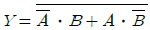
의 논리식을 간단히 하면?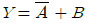
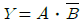
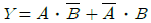
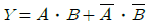
(정답률: 39%)
23. 다음 중 부동소수점 덧셈 과정에서 필요하지 않은 연산은?
- 정규화
- 가수덧셈
- 지수조정
- 지수덧셈
(정답률: 53%)
24. 전가산기(full-adder)의 carry 비트를 논리식으로 나타낸 것은? (단, x, y, z는 입력, C(carry)는 출력)
- C = x⊕y⊕z
- C = x‘y+x’z+yz
- C = xy+(x⊕y)z
- C = xyz
(정답률: 71%)
25. 하드웨어 신호에 의하여 특정번지의 서브루틴을 수행하는 것은?
- vectored interrupt
- handshaking mode
- subroutine call
- DMA 방식
(정답률: 57%)
26. 명령어 파이프라인이 정상적인 동작에서 벗어나게 하는 일반적인 원인이 아닌 것은?
- 자원충돌
- 유효주소의 계산
- 데이터 의존성
- 분기곤란
(정답률: 60%)
27. 메모리에 대한 설명 중 옳지 않은 것은?
- RAM : 모든 번지에 대한 액세스 시간이 같다.
- Von-Volatile 메모리 : 정전시 내용을 상실한다.
- Non-destructive 메모리 : READ시 내용이 상실되지 않는다.
- ROM : Write 할 수 없다.
(정답률: 50%)
28. 복수 개의 프로세서가 하나의 제어 프로세서에 의해 제어되며 주로 배열이나 벡터 처리에 적합한 구조로 높은 처리능력을 갖는 명령 및 데이터 스트림(stream) 처리기는?
- SISD
- SIMD
- MISD
- MIMD
(정답률: 74%)
29. 파이프라인 프로세서(Pipeline processor)의 설명 중 가장 적합한 것은?
- 2개 이상의 명령어를 동시에 수행할 수 있는 프로세서
- Micro program에 의한 프로세서
- Bubble memory로 구성된 프로세서
- Control memory가 분리된 프로세서
(정답률: 73%)
30. 다음 중 인터럽트를 요구한 입출력 기기를 확인하는 방법에 따른 분류로 옳은 것은?
- 내부 인터럽트, 외부 인터럽트
- 내부 인터럽트, 하드웨어 인터럽트
- 차단 가능 인터럽트, 차단 불가능 인터럽트
- 벡터형 인터럽트, 조사형 인터럽트
(정답률: 46%)
31. 입출력 장치 지정방식에서 Memory Mapped I/O 방식에 대한 설명으로 틀린 것은?
- 기억 장치의 일부 공간을 입출력 포트에 할당한다.
- 기억 장치와 입출력 번지 사이의 구별이 없다.
- 기억 장치의 이용 효율이 낮다.
- 기억 장치의 명령을 입출력 명령으로 사용 불가능하다.
(정답률: 50%)
32. 디지털 IC의 특성을 나타내는 내용 중 전달지연 시간이 가장 짧은 것부터 차례로 나열한 것으로 옳은 것은?
- ECL - MOS - CMOS - TTL
- TTL - ECL - MOS - CMOS
- ECL - TTL - CMOS - MOS
- MOS - TTL - ECL - CMOS
(정답률: 53%)
33. 다음은 어느 컴퓨터 시스템에서 사용하고 있는 ASCII 코드의 예이다. 이 중 코드의 성격이 다른 것은? (단, 각 코드의 가장 왼쪽 비트는 패리티 비트이다.)
- A : 10110001
- J : 01001010
- 0 : 10111001
- * : 00101010
(정답률: 37%)
34. 다음 수치 코드에 대한 설명 중 옳지 않은 것은?
- 수치 코드에는 자리 값을 가지고 있는 가중 코드(weighted code)와 자리 값이 없는 비가중 코드(non-weighted code)로 구분할 수 있다.
- 10진 자기보수화 코드로는 2421 code, excess-3 code 등이 대표적이다.
- 3초과 코드는 8421 코드에 10진수 3을 더한 코드로 코드 내에 하나 이상의 1 이 반드시 포함되어 있어 0과 무신호를 구분하기 위한 코드이다.
- 그레이 코드(Gray Code)는 대표적인 가중(weighted) 코드로 인접한 코드의 비트가 1비트만 변하여 산술연산에 적합하다.
(정답률: 43%)
35. 덧셈 명령 ADD(0800)이 수행되면 연산장치로 보내지는 내용은? (단, ( )는 간접주소 방식을 뜻하고 기억장소 0800번지에는 2000 이 저장되어 있음)
- 2000
- 2000번지의 내용
- 0800
- 0800의 내용
(정답률: 60%)
36. 가상 기억장치(virtual memory)의 특징이 아닌 것은?
- 컴퓨터의 용량을 확장하기 위한 방법이다.
- 가상 기억공간의 구성은 프로그램에 의해서 수행된다.
- 가상 기억장치의 목적은 기억공간이 아니라 속도이다.
- 주 기억장치와 보조 기억장치가 계층 기억 체제를 이루고 있다.
(정답률: 74%)
37. 매크로(MACRO) 명령어는 프로그램의 어느 것과 유사한가?
- NAME
- END문
- CALL문
- 파라미터(Parameter)
(정답률: 67%)
38. 하나의 명령어가 아래처럼 6단계로 나누어 실행될 때 실행 순서가 맞는 것은?
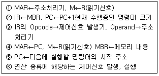
- ①→②→③→④→⑤→⑥
- ④→②→③→①→⑥→⑤
- ⑤→③→④→②→①→⑥
- ⑥→⑤→④→③→②→①
(정답률: 50%)
39. 주변장치나 메모리의 Data 입출력 방식이 아닌 것은?
- 채널의 사용
- 인터럽트 사용
- 프로그램 사용
- 버스의 사용
(정답률: 56%)
40. 다음 중 롬(ROM) 내에 기억시켜 둘 필요가 없는 정보는?
- bootstrap loader
- micro program
- display character code
- source program
(정답률: 64%)
3과목: 마이크로전자계산기
41. 다음 중 스택과 관련이 없는 것은?
- 서브루틴 수행
- 역표기법(Reverse polish)을 이용한 수식 계산
- LIFO 구조
- ALU
(정답률: 58%)
42. 포팅을 통해 리눅스 프로그램/유틸리티를 MS윈도에서 사용할 수 있도록 하는 프로그램은?
- cygwin
- perl
- JDK
- driver development kit
(정답률: 64%)
43. 다음 중 컴퓨터를 구성하고 있는 것을 두 부분으로 분류할 때 가장 옳은 것은?
- 중앙처리장치(CPU)와 입출력장치
- 누산가(ACC)와 연산기(ALU)
- 중앙처리장치(CPU)와 제어장치
- 주기억장치와 보조기억장치
(정답률: 43%)
44. 다음 용어 중 보조기억장치와 관계없는 것은?
- 섹터(Sector)
- 트랙(Track)
- 볼륨(Volume)
- 모뎀(Modem)
(정답률: 69%)
45. 다음 중 중앙처리장치(CPU)에 가장 많이 의존하는 입ㆍ출력 방식은?
- 프로그램에 의한 입ㆍ출력
- 인터럽트에 의한 입ㆍ출력
- 데이터 채널에 의한 입ㆍ출력
- 입ㆍ출력 전용장치에 의한 입ㆍ출력
(정답률: 60%)
46. 다음 마이크로프로세서 명령어 중 그 기능상 성격이 다른 것은?
- ADD
- SUB
- MOV
- INC
(정답률: 46%)
47. 비동기(Asynchronous) 직렬 전송과 관련이 적은 것은?
- stop bit, start bit
- framing error
- sync character
- information bit
(정답률: 62%)
48. 명령어 실행시 기억장치로부터 가져온 내용을 가지고 주어진 동작을 수행하는 과정을 무엇이라고 하는가?
- Fetch cycle
- Indirect cycle
- Execution cycle
- Interrupt cycle
(정답률: 46%)
49. 메모리에 저장된 내용이 그림과 같을 때 immediate, direct, indirect 어드레싱 모드를 사용하는 100번지의 명령이 수행되는 경우 실제 데이터는 순서대로 각각 얼마인가?
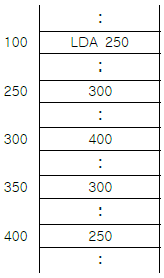
- 300, 400, 250
- 250, 300, 400
- 100, 300, 400
- 250, 300, 350
(정답률: 54%)
50. CALL 혹은 JUMP 명령을 실행할 때 결국 어느 레지스터가 수정되는가?
- accumulator
- MAR(memory address register)
- PC(program counter)
- flag register
(정답률: 58%)
51. CD-ROM은 초당 75개 섹터에 접근하여 데이터를 판독할 수 있고 1개 섹터에는 2KB의 데이터를 저장한다면 1시간 10분 동안 저장되는 데이터 용량은 약 얼마인가?
- 약 600[MB]
- 약 630[MB]
- 약 10.5[MB]
- 약 540[MB]
(정답률: 44%)
52. 8085 CPU에서 클록은 약 2.4576[MHz]이다. LDA 명령을 수행하는데 13개 T 스테이트가 필요하다. 이때 명령 사이클은 약 몇 [μs] 인가?
- 13
- 5.2
- 2.5
- 3.2
(정답률: 67%)
53. 마이크로컴퓨터의 레벨구조에서 하드웨어와 가장 밀접한 최하위 레벨 구조는 무엇인가?
- 소프트웨어 레벨
- 기본소자 레벨
- 매크로 레벨
- 마이크로 레벨
(정답률: 57%)
54. 연계편집 프로그램(linking editor)은 목적 프로그램을 입력으로 읽는다면 출력으로는 어떤 프로그램을 생성하는가?
- 로드 프로그램(load program)
- 유틸리티 프로그램(utility program)
- 매칭 프로그램(matching program)
- 서비스 프로그램(service program)
(정답률: 50%)
55. 다음 중 별도의 제어기를 필요로 하는 I/O 방식은?
- DMA 방식
- Memory mapped I/O 방식
- Polled I/O 방식
- Program controlled I/O 방식
(정답률: 56%)
56. 프로그램을 작성하여 기계어 번역시 또는 실행시 문법적 오류나 논리적 오류를 바로 잡는 과정을 무엇이라 하는가?
- Assembly
- Loading
- Debugging
- Editing
(정답률: 74%)
57. 주기억장치의 고속화를 위해 사용되는 고속의 버퍼 메모리는?
- ROM
- 가상 메모리
- 캐시 메모리
- 보조 기억장치
(정답률: 65%)
58. 다음은 ROM 회로의 Logic Diagram 이다. 이에 해당하는 진리표로 옳은 것은? (단, X는 절단 상태를 의미한다.)
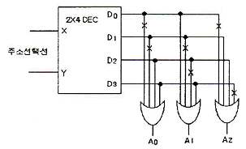
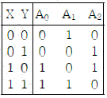
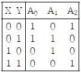
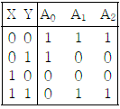
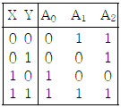
(정답률: 62%)
59. 다음은 CPU가 프린터로 데이터를 출력하는 과정을 나타낸 것이다. 순서대로 올바르게 나열된 것은?
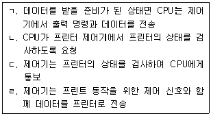
- ㄴ→ㄱ→ㄷ→ㄹ
- ㄴ→ㄷ→ㄱ→ㄹ
- ㄷ→ㄴ→ㄱ→ㄹ
- ㄷ→ㄱ→ㄴ→ㄹ
(정답률: 62%)
60. 인터페이스 버스가 세션 핸드세이킹(handshakin) 방식을 사용할 때 사용하는 신호가 아닌 것은?
- DAV 신호
- RFD 신호
- DAC 신호
- START 신호
(정답률: 50%)
4과목: 논리회로
61. 다음 중 가장 큰 수는?
- 10진수 245
- 8진수 455
- 16진수 FC
- 2진수 11101011
(정답률: 50%)
62. 다음 회로에 대한 설명으로 틀린 것은? (단, 정의 논리이다.)
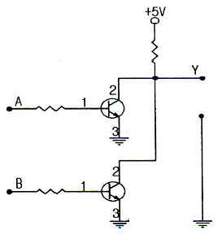
- NOR gate로 동작 된다.
- 입력 A=0, B=0일 경우 출력 Y=1 이 된다.
- 입력 A=1, B=1일 경우 출력 Y=0 이 된다.
- 2개의 트랜지스터를 이용한 비교회로이다.
(정답률: 56%)
63. 100까지 카운트할 수 있는 카운터는 최소 몇 개의 플립플롭이 필요한가?
- 5
- 6
- 7
- 8
(정답률: 46%)
64. 2진수 11001011(2)을 그레이 코드로 변환하면?
- 01010001(G)
- 11101111(G)
- 10101110(G)
- 00010000(G)
(정답률: 58%)
65. JK 플립플롭에서 J의 값이 1 이며, K의 값이 0 인 경우 수행되는 기능은?
- 불변(previous state)
- 리셋(reset)
- 세트(set)
- 토글(toggle)
(정답률: 45%)
66. 다음 중 프로그램을 지울 때 일정 파장의 자외선이 필요한 것은?
- mask ROM
- DRAM
- (UV)EPROM
- EEPROM
(정답률: 60%)
67. 다음 RS 플립플롭 타이밍도의 결과값(Q)은?
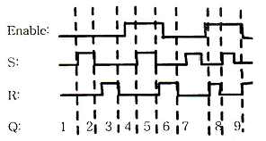
- 0-0-0-0-1-0-0-0-1
- 0-1-0-0-1-0-1-0-1
- 0-0-1-0-0-1-0-1-0
- 0-1-0-0-1-1-0-1-0
(정답률: 46%)
68. 10진수 0.4375를 2진수로 변환한 것으로 옳은 것은?
- 0.1110(2)
- 0.1101(2)
- 0.1011(2)
- 0.0111(2)
(정답률: 48%)
69. 다음 논리회로에서 OR 회로의 결과와 같은 것은?
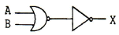
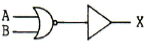
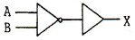
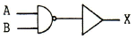
(정답률: 40%)
70. Y = A‘ B’ C + A B D‘ + A B’ C‘ D + A B C D 논리식을 카르노 맵 방법을 이용하여 간소화 한 것 중 옳은 것은?
- A C D‘ + B
- A‘ B C
- A‘ B + C D
- A‘ B D’ + B D
(정답률: 30%)
71. 전가산기에 A=1, B=1, Ci=0 을 가할 때, 합과 자리올림의 출력은?
- 합 : 0, 자리올림 : 0
- 합 : 1, 자리올림 : 0
- 합 : 0, 자리올림 : 1
- 합 : 1, 자리올림 : 1
(정답률: 45%)
72. 그림과 같은 결선 논리회로의 출력식은?
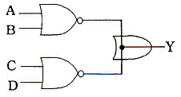
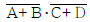
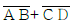
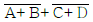
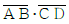
(정답률: 47%)
73. 2의 보수법에 근거한 연산장치에서 8bit로 표현할 수 있는 10진수의 범위는?
- -128 ~ +127
- 0 ~ 255
- -127 ~ +127
- -128 ~ +128
(정답률: 54%)
74. 다음 회로도는 어떤 기능의 소자에 관한 것인가?
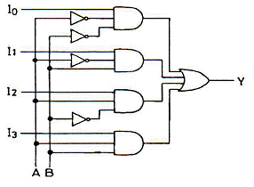
- 멀티플렉서(Multiplexer)
- 디코더(Decoder)
- 인코더(Encoder)
- 디멀티플렉서(Demultiplexer)
(정답률: 42%)
75. 데이터 전송용으로 가장 많이 사용되는 코드인 ASCII code에서 숫자를 나타내는 존 bit의 값은?
- 100
- 101
- 011
- 110
(정답률: 48%)
76. 다음 회로를 NAND 게이트만을 사용하여 구성하면?
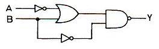
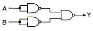
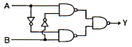
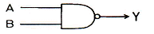
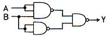
(정답률: 43%)
77. 다음 입ㆍ출력표와 같이 동작하는 회로는?
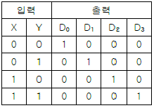
- 인코더
- 디코더
- MUX
- DEMUX
(정답률: 57%)
78. 다음 조합회로에서 a, b, x, y, z의 관계가 맞는 것은?
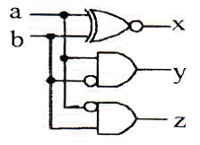
- 0, 1, 0, 1, 1
- 1, 0, 0, 0, 1
- 0, 0, 1, 0, 0
- 1, 1, 1, 1, 1
(정답률: 41%)
79. 다음 그림과 같은 회로의 명칭은?
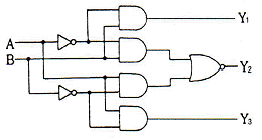
- 일치 회로
- 반일치 회로
- 다수결 회로
- 비교 회로
(정답률: 48%)
80. JK 플립플롭의 특성 방정식은? (단, Q는 현재 상태, Q(t+1)은 다음 상태이다.)
- Q(t+1) = J'Q' + KQ
- Q(t+1) = J'Q + KQ'
- Q(t+1) = JQ' + K'Q
- Q(t+1) = JQ + K'Q'
(정답률: 53%)
5과목: 데이터통신
81. HDLC는 링크 구성 방식에 따라 세 가지 동작모드를 가지고 있다. 다음 중 해당하지 않는 것은?
- 정규 응답 모드(NRM)
- 비동기 응답 모드(ARM)
- 비동기 균형 모드(ABM)
- 정규 균형 모드(NBM)
(정답률: 50%)
82. 데이터 프레임을 연속적으로 전송해 나가다가 NAK를 수신하게 되면, 오류가 발생한 프레임 이후에 전송된 모드 데이터 프레임을 재전송하는 방식은?
- Stop-and-wait
- Stop-and-wait ARQ
- Go-back-N ARQ
- ARQ(automatic repeat request)
(정답률: 66%)
83. RTCP(Real-Time Control Protocol)의 특징으로 옳지 않은 것은?
- Session의 모든 참여자에게 컨트롤 패킷을 주기적으로 전송한다.
- RTCP 패킷은 항상 16비트의 경계로 끝난다.
- 하위 프로토콜은 데이터 패킷과 컨트롤 패킷의 멀티플렉싱을 제공한다.
- 데이터 전송을 모니터링하고 최소한의 제어와 인증 기능을 제공한다.
(정답률: 25%)
84. 라이팅(routing) 프로토콜에 해당하지 않는 것은?
- BGP(Border Gateway Protocol)
- EGP(Exterior Gateway Protocol)
- SNMP(Simple Network Management Protocol)
- RIP(Routing Information Protocol)
(정답률: 75%)
85. 다음이 설명하고 있는 에러 검출 방식은?
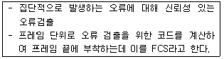
- Cyclic Redundancy Check
- Hamming Code
- Parity Check
- Block Sum Check
(정답률: 55%)
86. 다음이 설명하고 있는 프로토콜은?
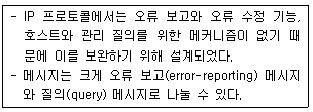
- IGMP(Internet Group Management Protocol)
- ICMP(Internet Control Message Protocol)
- BOOTP(Bootstrap Protocol)
- IPv4(Internet Protocol version 4)
(정답률: 56%)
87. 전송속도가 10[Mbps]이고, 버스의 총 길이가 2500[m]인 경우에 한 비트를 전송하는데 소요되는 비트시간이 1[μs]라고 할 때 슬롯 크기는 몇 [bit]인가? (단, 4개의 리피터를 사용하여 500[m]짜리 LAN 세그먼트를 5개 연결한 경우이며, 슬롯 시간은 51.2[μs]이다.)
- 64
- 128
- 256
- 512
(정답률: 43%)
88. 무선 LAN의 매체 접근 제어 방식 중 경쟁에 의해 채널 접근을 제어하는 것은?
- PSK
- ASK
- DCF
- PCF
(정답률: 37%)
89. 다음이 설명하고 있는 다중 접속 방식은?
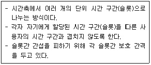
- FDMA
- CDMA
- SDMA
- TDMA
(정답률: 60%)
90. 무선 LAN의 장점으로 볼 수 없는 것은?
- 효율성
- 확장성
- 이동성
- 보안성
(정답률: 67%)
91. 다음 중 데이터링크 제어 프로토콜에 해당하는 것은?
- TCP
- DTE/DCE
- HDLC
- UDP
(정답률: 66%)
92. 다음 중 비연결형(connectionless) 네트워크 프로토콜에 해당하는 것은?
- HTTP
- TCP
- IP
- X.25
(정답률: 50%)
93. X.25 프로토콜에서 정의하고 있는 것은?
- 다이얼 접속(dial access)을 위한 기술
- start-stop 데이터를 위한 기술
- 데이터 비트 전송률
- DTE/DCE 인터페이스
(정답률: 67%)
94. HDLC 프레임의 종류 중 링크의 설정과 해제, 오류 회복을 위해 주로 사용되는 것은?
- I-Frame
- U-Frame
- S-Frame
- R-Frame
(정답률: 50%)
95. 다음 TCP/IP 관련 프로토콜 중 하이퍼텍스트 전송을 위한 프로토콜은?
- HTTP
- SMTP
- SNMP
- Mailto
(정답률: 55%)
96. 다음 중 비 적응 경로배정 방식인 플러딩(Flooding)에 대한 설명으로 가장 옳은 것은?
- 각 노드에 들어오는 패킷을 도착된 링크를 제외한 다른 모든 링크로 복사하여 전송하는 방식이다.
- 네트워크의 모든 근원지, 목적지 노드의 쌍에 대해서 한 경로씩을 미리 결정해 두는 방식이다.
- 네트워크의 변화하는 상태에 따라 반응하여 경로를 결정한다.
- 단순성과 견고성을 띄면서 트래픽의 부하를 훨씬 적게한 방식으로 노드는 들어온 패킷에 대해 나가는 경로를 무작위로 1개만을 선택한다.
(정답률: 42%)
97. 문자 위주의 전송에서 투명한 데이터의 전달을 위해 사용되는 제어 문자로 옳은 것은?
- DLE
- STX
- SYN
- DTM
(정답률: 59%)
98. TCP/IP 모델 중 패킷을 목적지까지 전달하기 위해 경로선택과 폭주 제어기능을 가지고 있으며, ARP, RARP, ICMP 등의 프로토콜이 제공되는 계층은?
- 응용계층
- 전송계층
- 인터넷계층
- 물리계층
(정답률: 61%)
99. 다음 베이스 밴드 전송방식 중 비트 간격의 시작점에서는 항상 천이가 발생하며, “1”의 경우에는 비트 간격의 중간에서 천이가 발생하고, “0”의 경우에는 비트 간격의 중간에서 천이가 없는 방식은?
- NRZ-L 방식
- NRZ-M 방식
- NRZ-S 방식
- NRZ-I 방식
(정답률: 63%)
100. 인터넷 응용서비스 중 가상 터미널(Virtual Terminal) 기능을 갖는 것은?
- FTP
- Archie
- Gopher
- Telnet
(정답률: 50%)